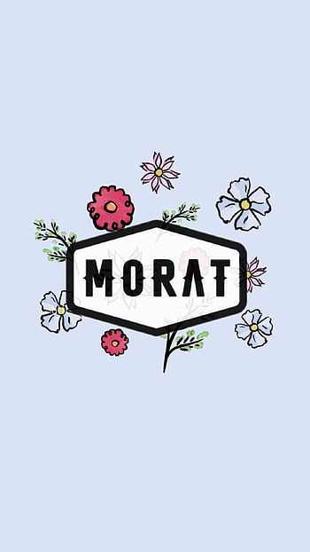

Hola, el tema de la pagina es: Morat

Miembros
Juan Pablo Isaza Piñeros
Juan Pablo Villamil Cortés
Simón Vargas Morales
Martín Vargas Morales
Inicios
Comenzaron tocando juntos en varias ocasiones y cuando cursaban la secundaria Juan Pablo Isaza tomó la decisión de crear una banda cuando seguían estudiando. En el año 2014, la banda realizó una sesión de grabación en Bogotá.
Origen del nombre
Antes de adoptar el nombre Morat, eran conocidos como "Malta". Pero, tiempo después, al ir a firmar con Universal Music, una banda brasileña ya estaba registrada como Malta, así que cambiaron su nombre al actual.


A Morat le queda muy bien ese dicho de que nadie es profeta en su tierra debido al gran esfuerzo que realizaron para posicionarse como la escena de su país; su fama le ha costado trabajo duro.
Yamileth Rosales
Representante del Fan Club de colombia

Esa belleza que ellos tienen es una muy particular, no son el tipo de hombres rubios, ojos claros, fortachón. Tienen una belleza muy particular. Se han mantenido en su estilo, no han roto su estilo por pegar en el mercado, actúan de manera natural, son espontáneos y fraternos de un modo que no se encuentra en otros artistas.
Daniela Díaz
Representante del Fan Club Oficial Perú

Ojalá ellos nunca pierdan esa esencia de hacer canciones tan bonitas, que estás con el corazón roto y vas a buscar a Morat y alguna de sus canciones puede describir tu situación actual. Esa línea de tranquilidad, donde no tienes que denigrar a nadie para pegar, es su sello 100%
Sara Rodriguez
Fan mexicana de Morat